<get>
Get variable value
Get variable in context or session, you can use the Ognl expression to get the properties and methods of variable.
value(required) Get variable value, can also get the Ognl values of the variable
valueScope(optional) The scope of the variable Property context:Get variable from context(default) session:Get variable from session
case(optional) String conversion operation, you can use "|" contains multiple operations, such as lower|plural Property lr:string to lowercase(Can also be lower) ur:string to uppercase(Can also be upper) hlr:the first string to lowercase(Can also be headLower) hur:the first string to uppercase(Can also be headUpper) lower:string to lowercase upper:string to uppercase headLower:the first string to lowercase headUpper:the first string to uppercase plural:plural form singular:singular form
trim(optional) Whether to retain the output value of the front and back blank characters Property false:yes(default) true:no(Including the newline)
The following ways can output "Hello Jmr", which is essentially converted to out.write(Object object)
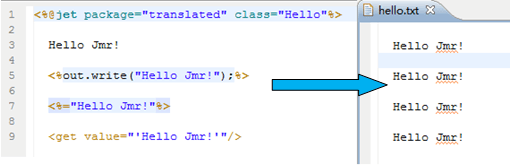
Output value:
Basic type: the output value are themself; String: The output is string; Object: Output toString() method.
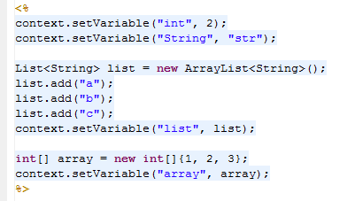
Use <get> to get their values
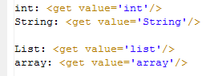
As you can see from the output, List and array call the toString () method
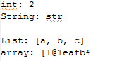
Tip: In <get>'s value, you can display the value of the variable by placing the mouse above, or by selecting it.
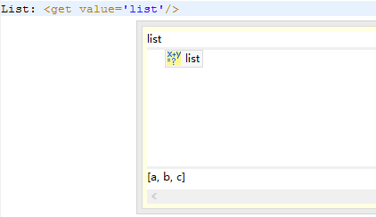
1.Set variables in context, scope is the current task, and variables can only be shared in template and action under the current task.
Here, you set the value of context in the <% %> of the template, or you can set context in action, variables such as String, boolean, int, and List.
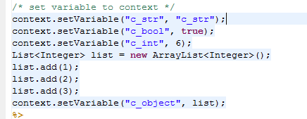
Use <get> to get their values
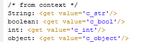
Result
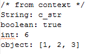
Tip: In <get> value, you can get all variables.
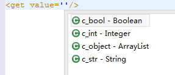
2.Set the variables in session, variables can be shared in templates and action in multiple tasks
Here, you set the value of context in the <% %> of the template, or you can set context in action, variables such as String, boolean, int, and Map.
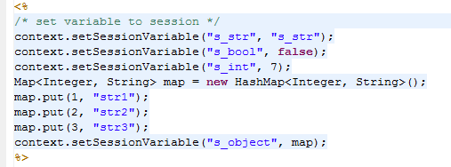
To get their values by <get>, scope valueScope enter session
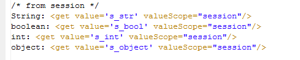
Result
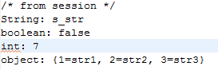
Tip: In <get> value, you can get all variables.
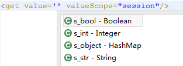
3.Set the variables in action
Here, you set the value of context in the action, variables such as String, boolean, and double[].
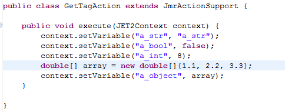
Use <get> to get their values
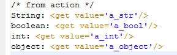
Result
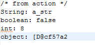
Tip: In <get> value, you can get all variables.
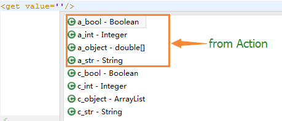
4.In the var of the <set>、<for> and so on tags.
The variable that are set in set or for tag are essentially set in context or session.
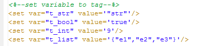
Use <get> to get their values, where list is output loop with the for tag, delimiter is ",".
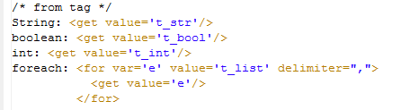
Result
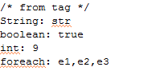
Get tag can get variable value, as well as get the properties and methods of ognl of variable value.
The following is a Student class with 2 fields, id and name
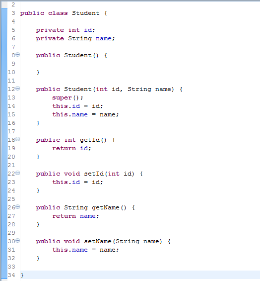
In action, new a Student object
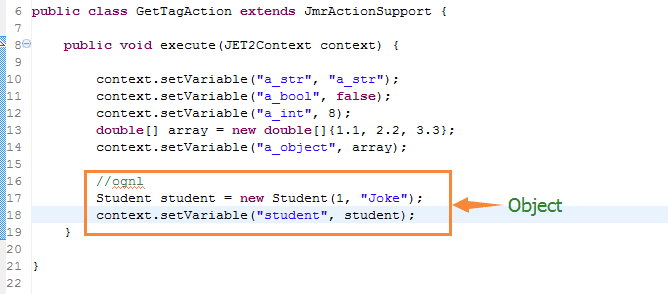
In the template, action set to GetTagAction
You can get the ognl values and ognl methods
Ognl values: When object field has get method, you can get the field value Ognl methods: The object method return value
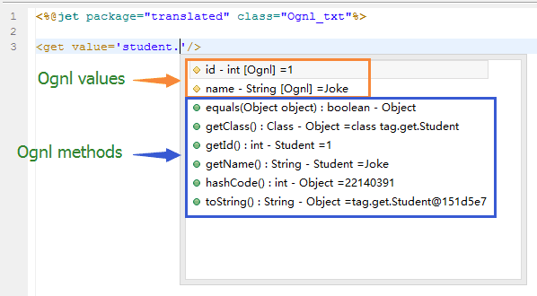
Not only get the Ognl value, but also get the chain field or method.
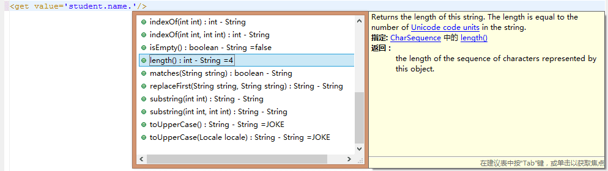
Use <get> to get their values
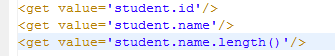
Result
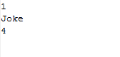
Tip: In <get>'s value, you can display the ognl value of the variable by placing the mouse above
Mouse above it.
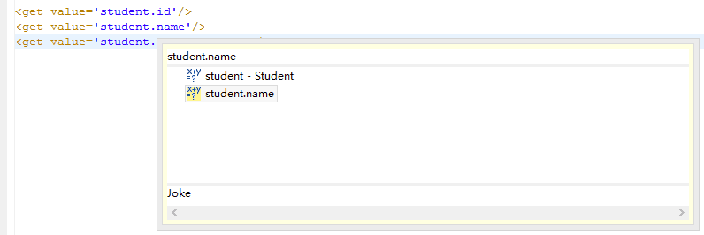
Selecting it.
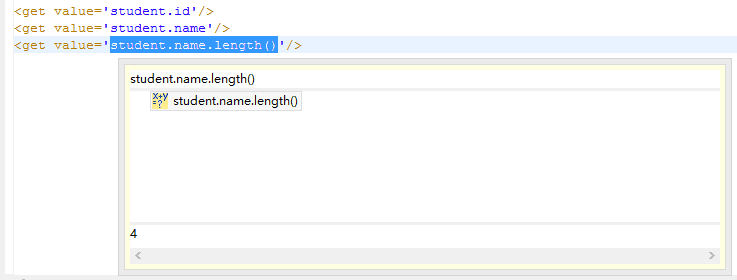
Through case, you can get the upper/lower or single/plural case.
In the following example, we set up a variable class, we want to get the upper and plural case. We can use "|" contains multiple operations.
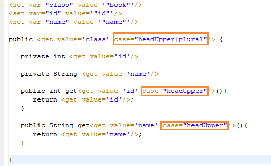
Result
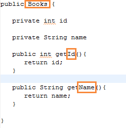
Trim is to judge whether to retain the output value of the front and back blank characters, the default false, that is to say, output all characters.
Example
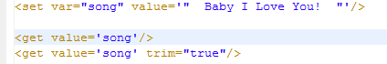
Result
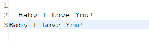